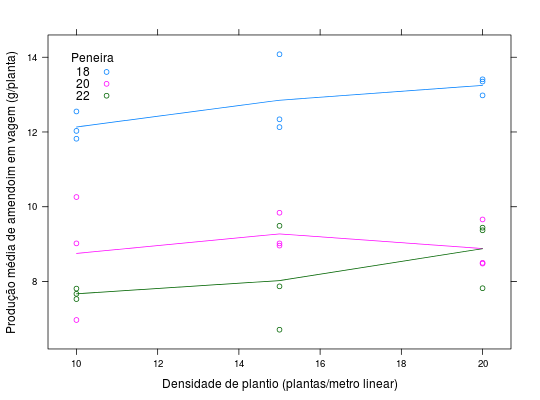

Dados de um experimento fatorial que estudou o efeito de densidade de plantio e tamanho da peneiras comerciais, de crivos circulares, para classificação das sementes da produção de amendoim (Arachis hypogaea L.) variedade Tatu V 53. O experimento foi instalado em delineamento de blocos casualizados.
Um data.frame com 27 observações e 4 variáveis, em que
densidpeneirablocoprodCada parcela tinha 4 linhas de cultivo, espaçadas de 50 cm, com 7 metros de comprimento, resultando em uma área de 14 m\(^2\). As duas linhas externas de cada parcela e meio metro de cada extremidade das linhas centrais foram consideradas como bordadura, fazendo-se as avaliações apenas no comprimento restante das duas linhas centrais, o que resultou em uma área útil de 6 m\(^2\).
BANZATTO; KRONKA (2013), Quadro 5.2.1, pág. 102.
library(lattice) data(BanzattoQd5.2.1)#> Warning: data set ‘BanzattoQd5.2.1’ not foundaddmargins(with(BanzattoQd5.2.1, tapply(X = prod, INDEX = list(interaction(peneira, densid), bloco), FUN = sum)))#> I II III Sum #> 18.10 11.82 12.03 12.55 36.40 #> 20.10 6.97 10.26 9.02 26.25 #> 22.10 7.53 7.67 7.81 23.01 #> 18.15 12.34 14.08 12.13 38.55 #> 20.15 8.96 9.02 9.84 27.82 #> 22.15 6.71 7.87 9.49 24.07 #> 18.20 13.41 12.98 13.35 39.74 #> 20.20 8.48 9.66 8.50 26.64 #> 22.20 7.82 9.44 9.37 26.63 #> Sum 84.04 93.01 92.06 269.11xyplot(prod ~ densid, data = BanzattoQd5.2.1, groups = peneira, type = c("p", "a"), auto.key = list(title = "Peneira", cex.title = 1, columns = 1, corner = c(0.05, 0.95)), xlab = "Densidade de plantio (plantas/metro linear)", ylab = "Produção média de amendoim em vagem (g/planta)")